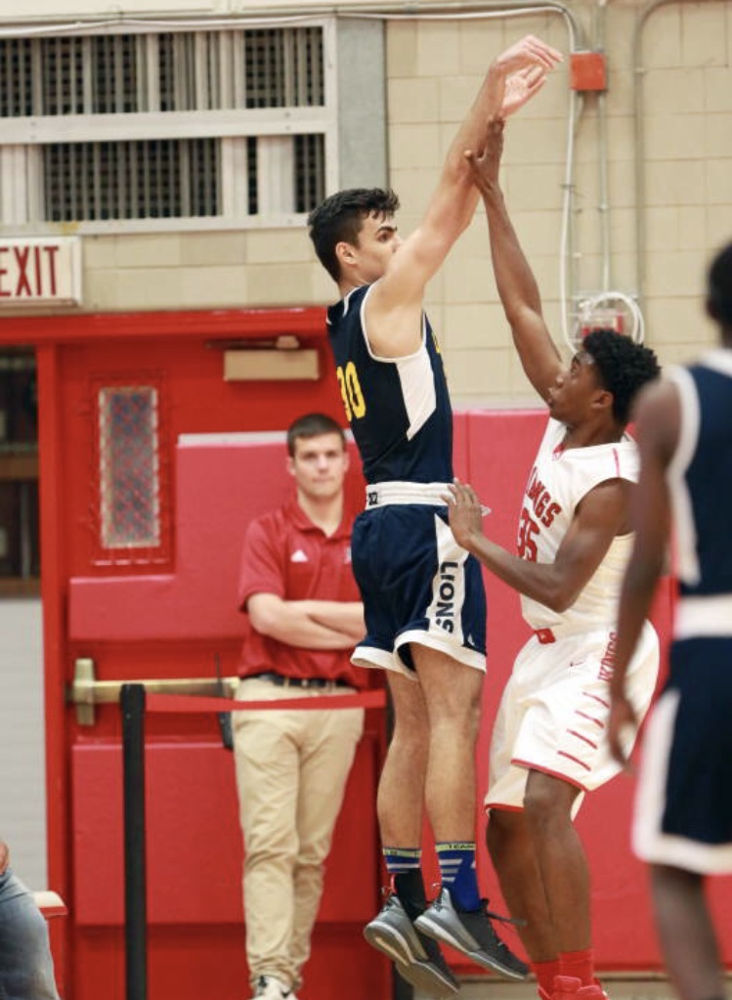

My creative title and font along with spicy text allignment
In the following few heading I will be talking about my personal goals in life as well as showing of some pictures of myself so please bear with me and have fun
A picture of me doing what I do best.Shooting 3s

This picture pretty much describes my whole life.I have been runing around chasing basketball all over the world which has given me an opportunity to live in the USA
and Germany as well as to experience things that I never have before which for I am very grateful
Heading 3
I am still unsure of my major but looking at the way the job market will potentilly look in the future I plan on majoring in Computer Engineering and then having a
a minor in Business. I think these two together would work fine and would open up many opportunities for me in the future.
- As far as my previous computer skills and experiences with programming the only experience I have is spending hours and hours playing Leage of Legends,CS:GO and
Fortnite with my Friends.
- My primary goal is to learn how to code and just improve my knowledge of the websites and how they are created. I would love to soak up all the knowledge that I can
because I know it will help me with my future classes and Ms.Engel seems like a great experienced source.
- One interestting thing about me is that I speak 3 languages fluently:German,Bosnian and English,I can read in arabic and I am quite porfficient in Spanish.I like to
belive that I was blessed with some sort of talent that helps me pick up new languages quick which is why I will be trying to learn French in the next semester.